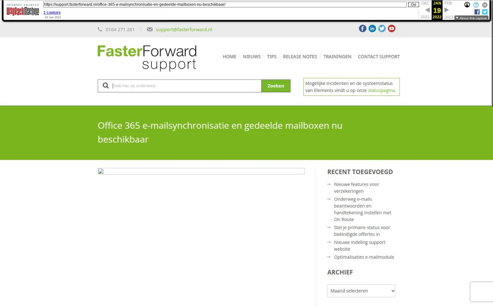

Office 365 e-mailsynchronisatie en gedeelde mailboxen nu beschikbaar

Tekstinhoud
Elements is uitgebreid met nieuwe features voor Microsoft Office 365/Outlook e-mailboxen. Hiermee zijn je Office 365 e-mails en e-mailadressen beter geïntegreerd in Elements. De verbinding tussen Elements en Office 365 is namelijk vernieuwd via onze API’s (i.p.v. een IMAP of POP3 protocol).
Gedeelde e-mailboxen beschikbaar
Elements ondersteunt nu ook gedeelde (‘Shared’) mailboxen van Office 365. Dit is een e-mailadres met daaronder andere e-mailadressen van medewerkers/subusers. Als beheerder zie je dan onder één inlog alle e-mailboxen van al je medewerkers. Voor centrale organisaties is dit bijvoorbeeld handig, omdat je de e-mailboxen van je deelnemers in kan zien.
Voorbeeld van een gedeelde mailbox met leden in Microsoft Outlook
Instellen
Een shared mailbox moet via de e-mailmanager ingesteld worden. Het hoofdaccount van deze gedeelde e-mailbox wordt dan verbonden met Elements. Lees hier hoe je deze kunt instellen.
E-mails staan automatisch op gelezen
Je hoeft e-mails nu niet meer twee keer te openen om ze op ‘gelezen’ te zetten in Elements en Office 365. E-mails die gelezen worden in Elements, worden ook op gelezen gezet in Office 365 en vice versa. Hetzelfde principe geldt voor e-mails die verwijderd worden. Wanneer je een e-mail verwijdert in Elements dan wordt deze ook in Office verwijderd.
Dit werkt alleen voor e-mails die binnenkomen per 5 augustus. Wanneer je een e-mail van voor 5 augustus leest in Office 365, blijft deze nog als ongelezen in Elements staan.
Voorbeeld: dezelfde e-mails in Outlook en Elements
Tip: gebruik een mailingregel om oude e-mails te verwijderen
In Office 365 hebben sommige organisaties een overvolle mailbox. In Office 365 kan je oude e-mails verwijderen met een mailingregel. Deze e-mails worden dan ook uit je Elements inbox verwijderd, maar blijven natuurlijk opgeslagen in het juiste klantdossier. Op deze manier is je e-mailbox netjes opgeruimd.
Let op: het verwijderen van e-mails is op eigen risico! Let dus goed op welke e-mails je verwijdert.
Voorbeeld: toevoegen van een mailingregel om e-mails uit 2019 te verwijderen
Geplaatst op 9 augustus 2021 (Laatste update: 16 augustus 2021)